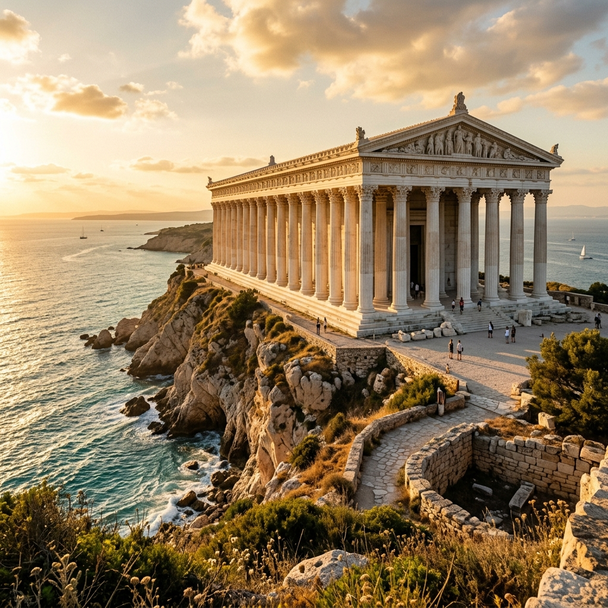
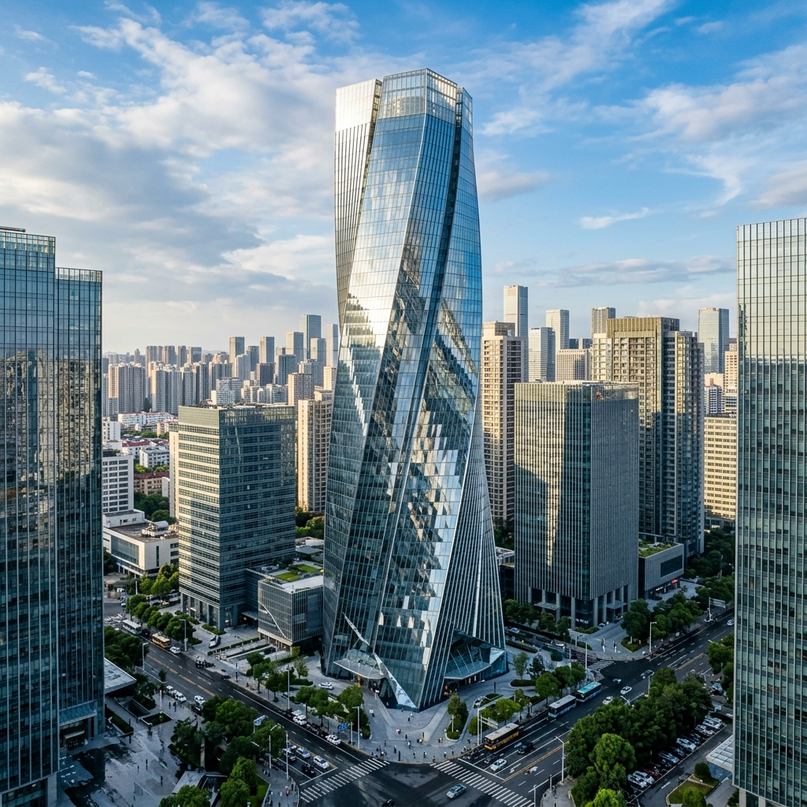
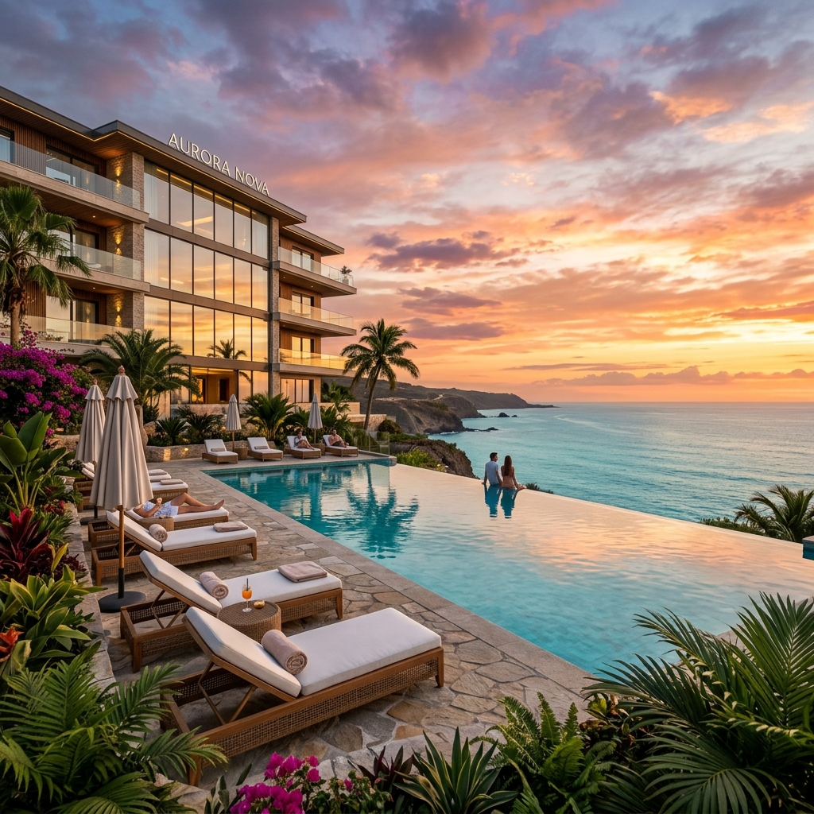
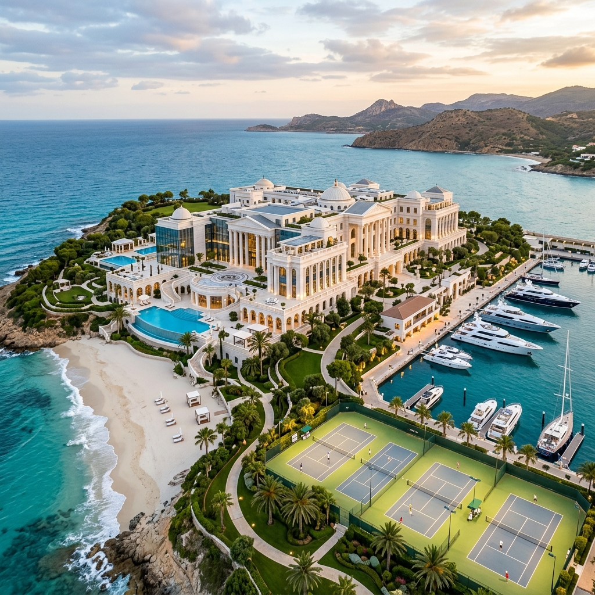
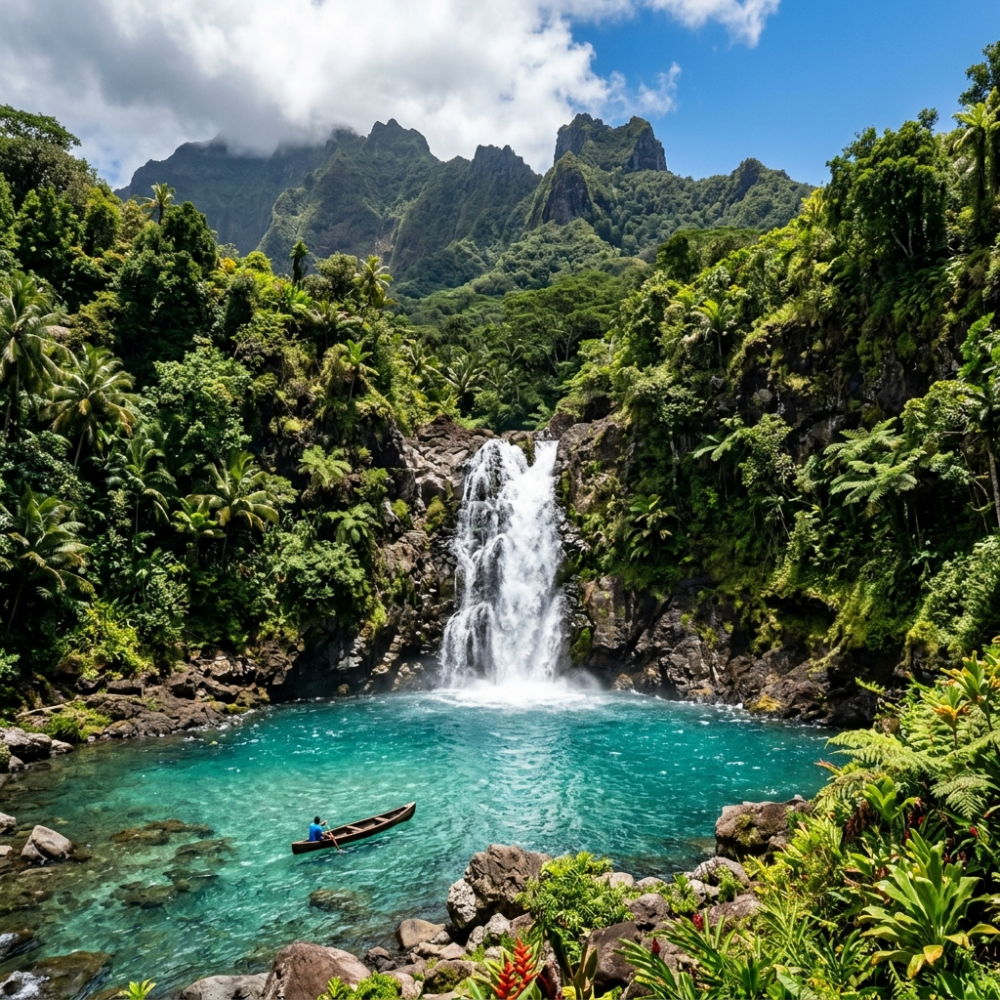
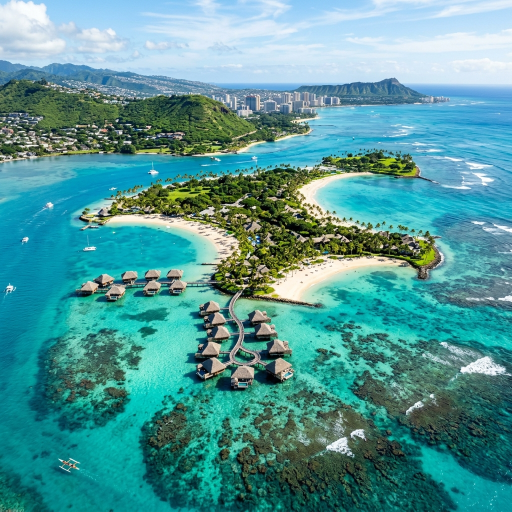
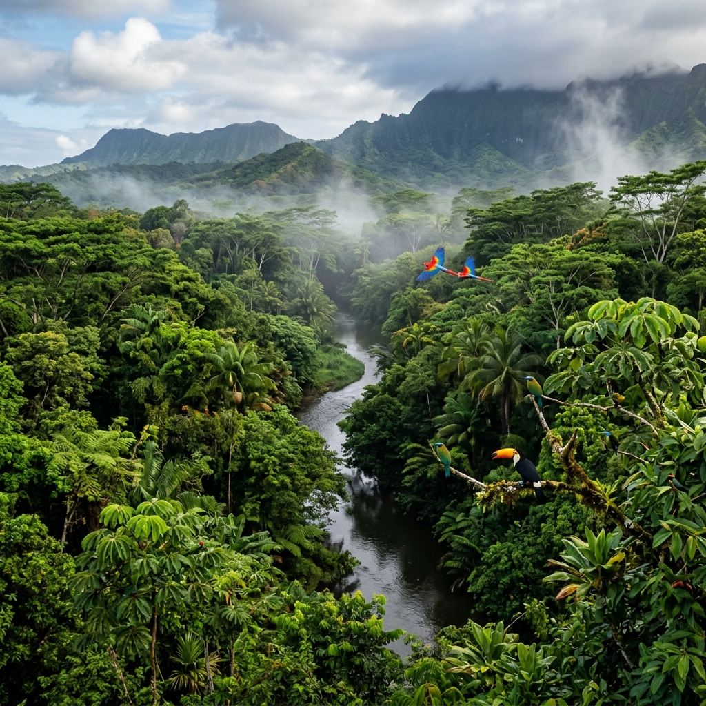
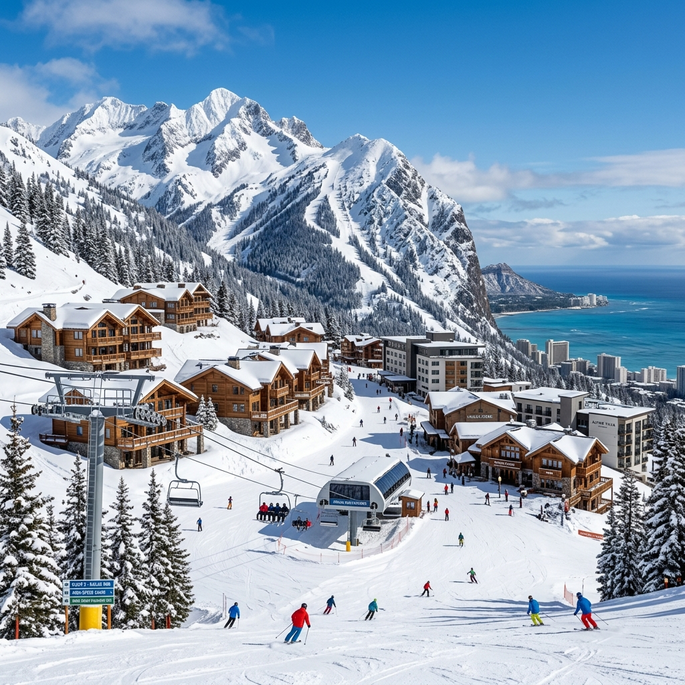
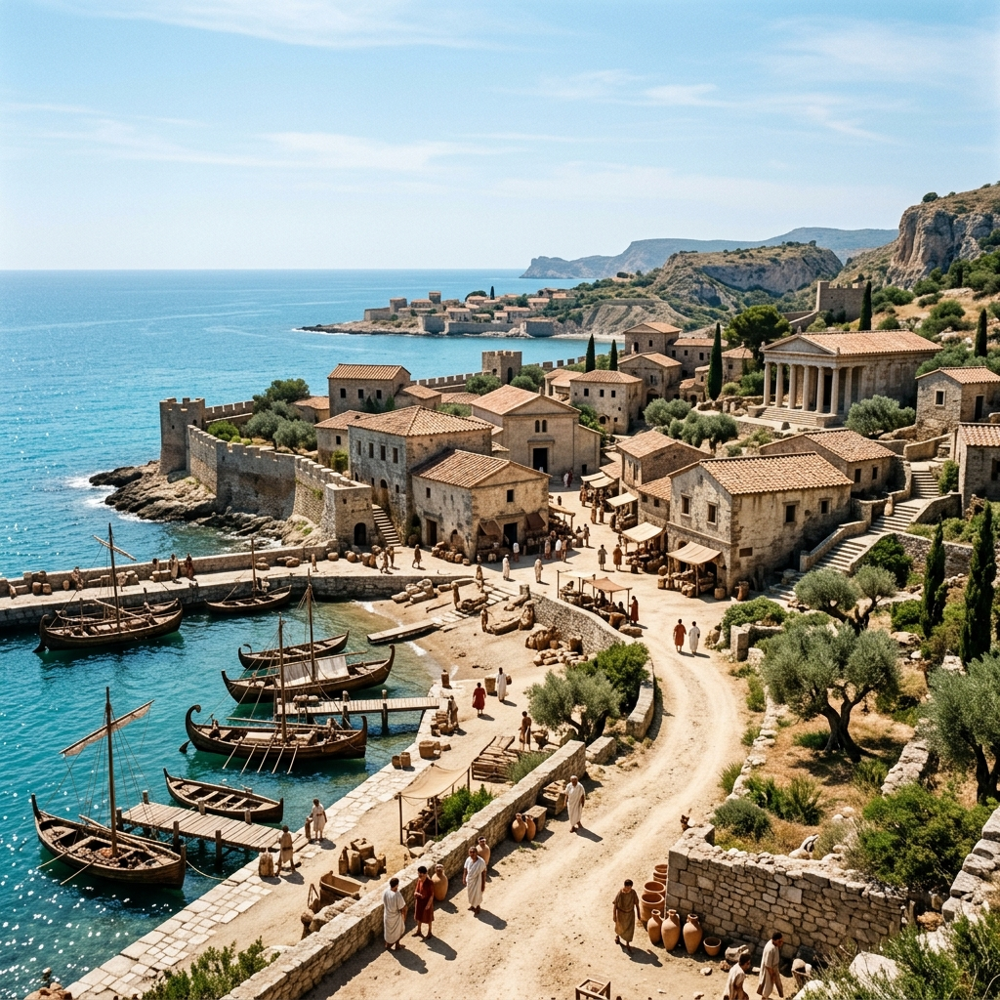

A világ legkeresettebb városa
Nova Aurelia nemcsak Waikiki, hanem az egész világ fővárosa. Hatalmas felhőkarcolóival, kormányzati negyedével és évezredes ókori műemlékeivel méltán nyerte el a világ legszebb városa címet.
Történelmi Értékek
Az azték építészet remekművei és a Római Birodalom grandiózus hagyatéka alkotja a város magját.
Modern Csodák
A világ legmagasabb és legdrágább felhőkarcolói formálják a lenyűgöző sziluettet.
Luxus és Kényelem
A Starlight Hotels és más világmárkák kínálnak felejthetetlen élményeket a látogatóknak.

Történelmi épületek
Waikiki a történelem során számtalan birodalom része volt, és ez a gazdag örökség ma is látható Nova Aurelia utcáin.
- Római templom: 100 tökéletesen egyforma oszlop, amelyek a nap állásától függően változtatják színüket.
- Lépcsős piramis: 24 méter magas, 2000 éves azték építmény, hihetetlen csillagászati pontossággal.
- Városfalak: A Római Birodalom leghosszabb, épségben maradt falszakasza és monumentális kapui.
- Waikiki Nemzeti Múzeum: Michelangelo Dávid-szobra és Botticelli remekművei várják a művészet kedvelőit.

Toronyházak
A város sziluettjét a jövő építészete uralja. Itt találhatók a legmerészebb mérnöki alkotások.
- Sky City: A világ legmagasabb épülete, 956 méteres magasságával az égbe nyúlik.
- Infinity Tower: A világ egyetlen 90 fokban megcsavart toronyháza, Waikiki modern jelképe.
- Világkormány Központ: Három hatalmas torony, melyeket a tetején egy hatalmas parkosított platform köt össze.

Luxus Szállodák
Waikiki a luxus turizmus fellegvára, ahol a kényelemnek nincsenek határai. Szállodáink a legmagasabb világszínvonalat képviselik.
- Hotel President: A világ egyetlen 15 csillagos szállodája, 1600 m²-es elnöki lakosztállyal.
- Hotel Atlantis: Víz alatti lakosztályok, ahol a tenger élővilága közvetlenül az ágyunk mellett úszik el.
- Hotel Khalifa: A Pálma-szigeten fekvő 10 csillagos resort a világ egyik legnagyobb aquaparkjával.
Hercegi Paloták
A kormány vezetőinek és a hercegi családnak otthont adó épületek a világ legértékesebb ingatlanai.
- Hercegi Palota: Raimondo herceg 80 milliárd dollár értékű otthona, saját koncertteremmel és mozival.
- Jennifer Palotája: 90 hektáros botanikus kerttel körülvett rezidencia a tengerparton.
- Chease és Jessica villája: Ludwig Mies van der Rohe által tervezett ultramodern üvegpalota.

Szórakoztató parkok
Családi kikapcsolódás világszínvonalon. Nova Aurelia a szórakoztatás központja is egyben.
Disneyland & Legoland
A világ legnagyobb tematikus parkjai, több mint 90 millió kockát használtak fel a makettek megépítéséhez.
Aqua World
80 csúszda és 40 medence. Itt található a 75 méter magas "Mount Everest" csúszda is.
Nova Aurelia Állatkert
Egzotikus állatok, sarki kupola és delfin show-k a világ legnagyobb állatkertjében.
Waikiki Regionális Csodái
Fedezze fel a fővároson túli világot: érintetlen természet, trópusi paradicsom és hófödte hegyek.

Természeti Csodák
Waikiki nemcsak az építészet, hanem a természet temploma is. A fenséges vulkanikus hegycsúcsoktól a kristálytiszta lagúnákba ömlő vízesésekig minden tájegység egyedi varázslatot rejt.
- Vulkanikus Csúcsok: A szigetvilág gerincét alkotó hegyláncok túraútvonalai lélegzetelállító panorámát kínálnak.
- Éden-vízesés: A dzsungel mélyén rejtőző, 80 méter magas vízesés alatt természetes medencék várják a fürdőzőket.
Trópusi Szigetvilág
A Waikiki-szigetvilág több száz kisebb-nagyobb szigete a világ legexkluzívabb pihenőhelye. A fehér homokos partok és a korallzátonyok élővilága minden képzeletet felülmúl.
- Pálma-szigetek: Mesterséges és természetes szigetek luxusvillákkal és privát partszakaszokkal.
- Paradise Islands: Vízre épült villák a Kaméleon-szigeten, közvetlen kapcsolattal a korallzátonyokhoz.


Érintetlen Esőerdők
Az amazóniai tartományaink őrzik a föld tüdejét. A burjánzó zöld növényzet és a különleges állatfajok világa a kalandvágyó utazók számára tartogat felejthetetlen élményeket.
- Biodiverzitás: Több ezer madárfaj és ritka orchideák hazája.
- Lombok feletti túrák: Speciális függőhidakon sétálva ismerhetjük meg az erdő felső szintjének életét.
Hófödte Síparadicsomok
Waikiki egyik legnagyobb meglepetése a magashegységek örök hava. A legmodernebb sífelvonók és luxus chaletek várják a téli sportok szerelmeseit.
- Prémium Pályák: Világszínvonalú sí- és snowboard pályák minden nehézségi szinten.
- Hegyi Üdülőhelyek: Exkluzív fa chaletek kandallóval és panorámás wellness részlegekkel.

"Nova Aureliában sétálni olyan, akár egy időutazás a múltból a jövőbe."
Kennedy Űrközpont
Ismerd meg az űrutazás történetét és kóstold meg az űrhajósok ételeit interaktív bemutatókon.
Fővárosunk régen és ma
Nova Aurelia fejlődése páratlan a világtörténelemben. A római településtől a modern világkormány székhelyéig hosszú út vezetett, melynek során a város megőrizte lelkét és kincseit.
